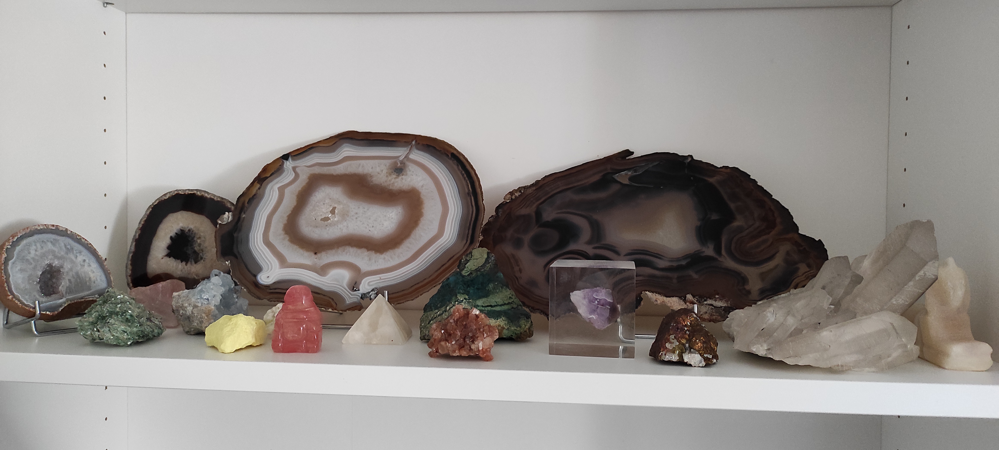
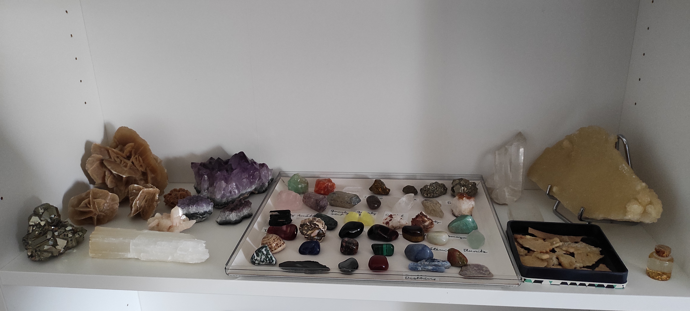
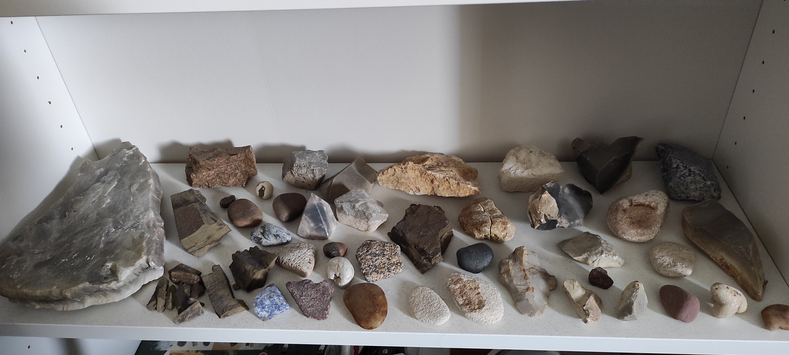
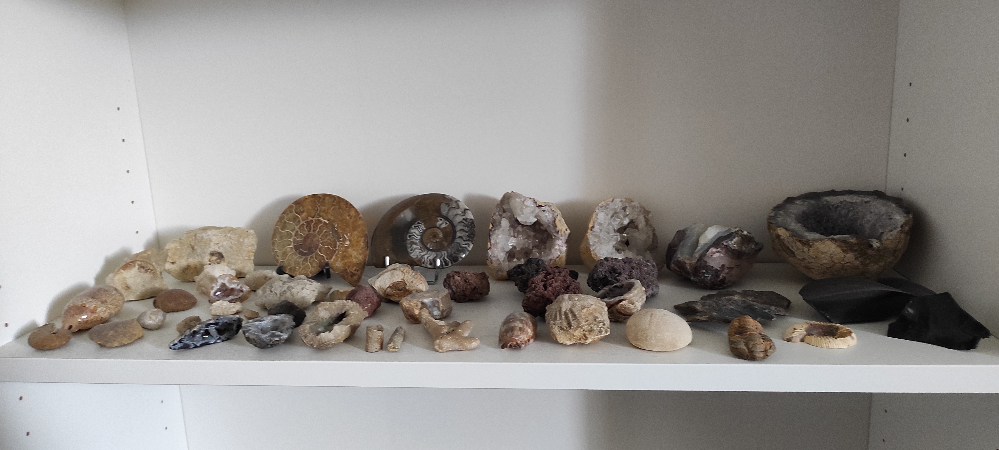
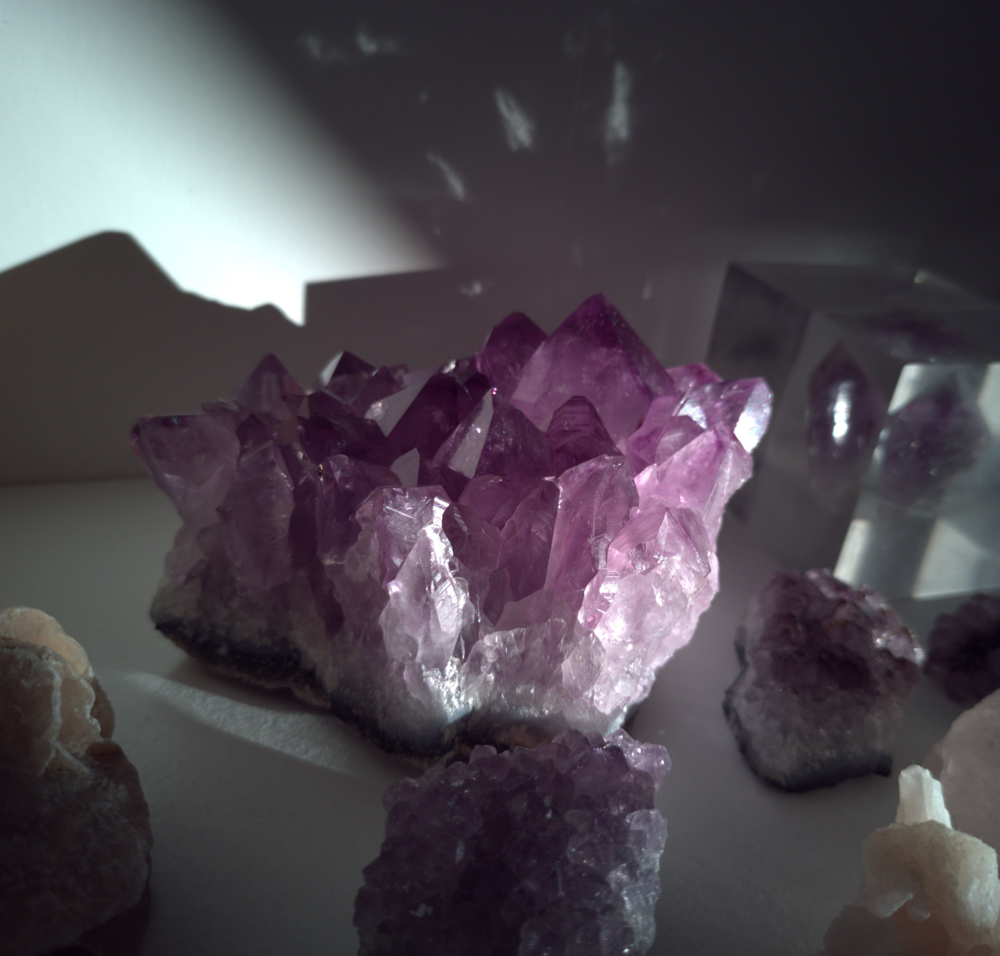
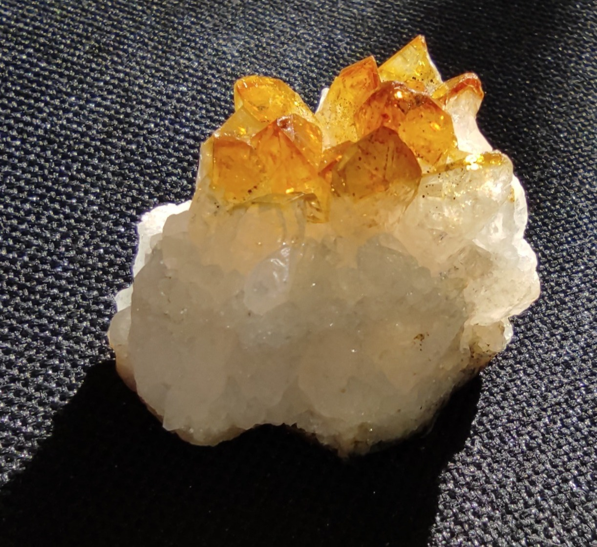
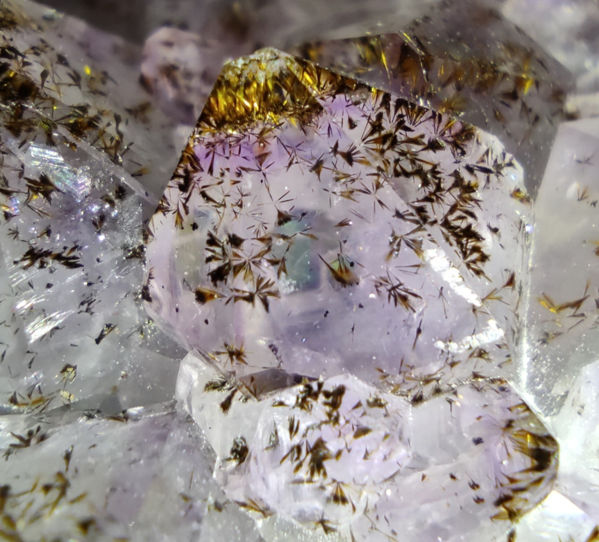
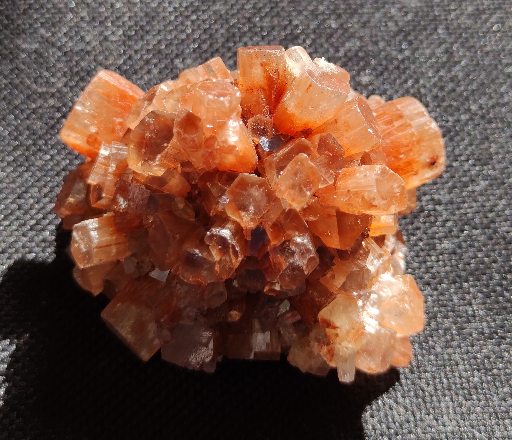

Mes centres d'intérêt
Géologie / Minéralogie




L’un de mes loisirs est la collection, l’identification et le classement de roches, fossiles et minéraux. Je possède aujourd’hui près d’une centaine de spécimens représentant une quarantaine d’espèces différentes. Cette passion m’accompagne depuis l’âge de 10 ans.
Photographie




Je pratique la photographie depuis l’âge de 14 ans. J’aime particulièrement photographier mes pierres : en jouant sur l’angle de prise de vue et l’exposition à la lumière, chaque image devient unique.